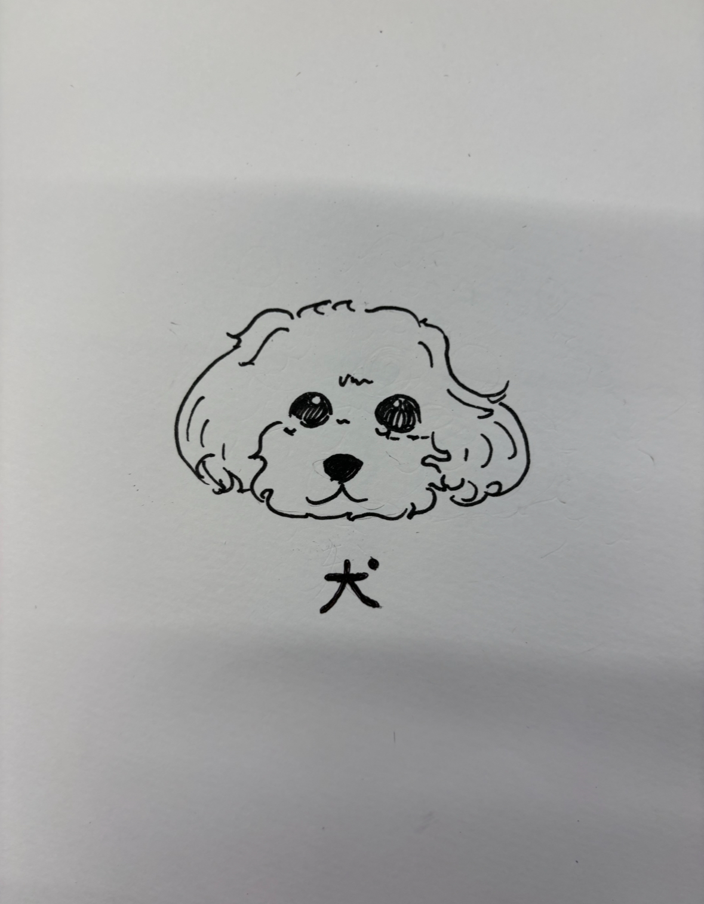
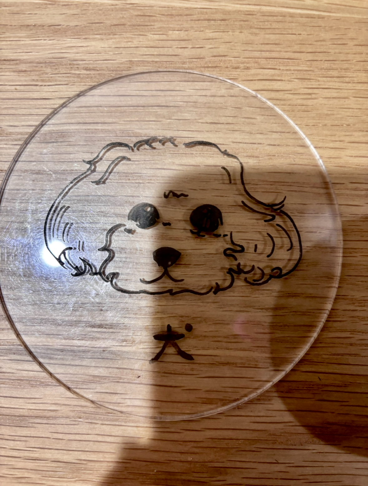

<h1>Design for Others</h1>
<h1>ペット表札</h1>
<div>近年、室内で犬を家の中で主流となっています。僕も犬を実家で飼っていますが、配達員や知らない人が家に訪れたときに<br>
犬が吠えてしまい、驚かせてしまうことがよくあります。そこで犬を飼っていることを知らせる『ペット表札』を作成しました。</div>

<h3>スケッチ</h3>
<p>実家で飼っているティーカッププードルをイメージして描きました。</p>
<br>

<h3>完成</h3>
<p>思ったよりも色が薄かったので油性ペンで塗りました。<br>
色が黒だけで寂しのでいろんな色をつたら良かったと思いました。</p>

